- Index
 ImageMagick Examples Preface and Index
ImageMagick Examples Preface and Index
- 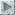 Blurring Images
- Sharpening Images (Under Construction)
- Generating Shadows
- Specialised Blurs
- Feathering Shapes using Blur (under construction)
- Related Operators (under construction)
Blurring, and its opposite, sharpening of images is a very important aspect of
image processing. In this section we will look at both.
Blurring Images
Blurring images so they become fuzzy may not seem like an useful operation, but
actually is very useful for generating background effects and shadows. It is
also very useful for smoothing the effects of the 'jaggies' to
anti-alias the edges of images, and to round out
features to produce highlighting effects.
Blurring is so important it is an integral part of
Image Resizing, though a different method of blurring, which is restricted
to within the boundaries of a single pixel of the original image.
Their are two general image blurring operators in ImageMagick. The "
-gaussian-blur" spread and
"
-blur". The results of
the two as very close, but as "
-blur" is a faster algorithm, it is generally preferred to the
former even though the former is more mathematically correct. (See
Blur vs the Gaussian Blur Operator.)
Blur/Gaussian Arguments
The arguments for "
-blur"
and "
-gaussian-blur" are the same, but to someone new to image
processing, the argument values can be confusing.
-blur {radius}x{sigma}
The important setting in the above is the second
sigma value. It can
be thought of as an approximation of just how much your want the image to
'spread' or blur, in pixels. Think of it as the size of the brush used to
blur the image. The numbers are floating point values, so you can use a very
small value like '
0.5'.
The first value
radius, is also important as it controls how big an
area the operator should look at when spreading pixels. This value should
typically be either '
0' or at a minimum double that of the
sigma.
To show you the effects of the options lets take this simple image, with a lot
of surrounding space (blur operators need lots of room to work), and create a
table of the results for various operator settings. I also purposely used a
font that contains both thick and thin lines see the fuzzing of small line
details and large areas of color.
convert -font Gecko -pointsize 48 label:A \
-bordercolor white -border 20x10 blur_source.png
| |
|
A small
radius limits any effect of the blur to pixels that are within
that many pixels of the one being blurred (a square radius). As such using a
very small
radius such as '
1' effectively limited the
blurring to within the immediate neighbours of each pixel.
Note that while
sigma is a floating point,
radius is not. If a
floating point value is given (or internally calculated) it is rounded up to
the nearest integer, to determine the 'neighbourhood' of the blur.
How much each neighbour contributes to the final result is still controlled by
the
sigma. A very small
sigma (less than '
1' )
limits their contribution to a small amount, while a larger
sigma
contributes more equal amounts from all the neighbours. The largest
sigma of '
65355' will produce a simple averaging of all
the pixels in the square neighbourhood.
Also notice that for smallish
radius but a large
sigma you see
artifacts appear in the blurred result. This is especially visible in the
output for "
-blur 5x8". This is caused by the small square
neighbourhood 'cutting off' the area blurred, producing sudden stops in the
smooth Gaussian curve of the blur, and thus producing
Ringing Artefacts along sharp edges. So...
Never use a radius smaller than the sigma for blurs
The ideal solution is to simply set
radius to '
0x' as
shown by the last line of the above table. In that case the operator will try
to automatically determine the best
radius for the
sigma given.
The smallest radius IM would use is 3, and is typically 3 *
sigma for a
Q16 version of IM (a smaller radius is used for IM Q8, as it has less
precision). The only time I would use a non-zero
radius was for a very
small
sigma or for specialized blurs. So..
When possible use a radius of zero for blurring operations
Small values for the
sigma are typically only used to fuzz lines and
smooth edges on images for which no anti-aliasing was used (see
Anti-Aliasing for more info). In that situation
I find a blur of '
1x0.3' an useful value to remove most of the
'jaggies' from images.
Large values however are useful for producing fuzzy images, for backgrounds or
shadow effects (see
Compound Fonts), or even image
highlighting effects (as shown thought the
Advanced
Examples page).
Due to the way IM handles '
x' style of arguments, the
sigma in the above is optional. However it is the more important
value, so it should be
radius that is optional, as
radius can be
automatically determined. As such a single value argument to these type
of convolution operators is useless. This is unlikely to change as it has been
this way for a very long time, and would break too many things.
Blur uses the Channel Setting
To demonstrate blur, lets start simply by generating a fuzzy black circle on a
light blue background...
convert -size 70x70 xc:lightblue \
-fill black -draw 'circle 35,35 20,25' circle_on_blue.png
convert circle_on_blue.png -blur 0x8 circle_on_blue_blur.png
| |
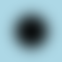
|
As you can see a blurring a plain image like this has no problems. It just
works, as you would expect.
But if we try this again with an image containing a transparent background...
convert -size 70x70 xc:none \
-fill black -draw 'circle 35,35 20,25' black_circle.png
convert black_circle.png -blur 0x8 black_blurred.png
| |
![[IM Output]](../images/blur/black_blurred.png)
|
Hang on, what happened! The image didn't change!
Well in actual fact the operator did work. But "
-blur" as a grey-scale channel
operator, is limited by the "
-channel" setting, to just the three colour channels.
That means only the three color channels of the image were blurred, leaving
the transparency or alpha channel of the image as is.
In the above however, the image is a fully opaque circle on a background
canvas of the color '
none', which IM defines as fully-transparent
black! That which means we have a black circle, on a transparent black
background. In other words an image in which all the colors are black, with
some parts opaque, and other parts
transparent.
Consequently when we blurred the image we only blurred black with black, which
as you can probably guess, produced, black! Thus the result had no change in
color.
Also we never touched the alpha or transparency channel of the image, so we
just ended up with the transparency of the image being unchanged. That is a
black circle!
What we really wanted to do, is blur all four image channels, particularly the
alpha channel. To do this we set the "
-channel" setting to all four
channels of the image (EG: using a value of '
RGBA').
convert black_circle.png -channel RGBA -blur 0x8 black_blurred_RGBA.png
| |
|
Just to summarize...
Always use a "-channel RGBA" setting
when blurring images with transparency.
|
IM version 5.5.7 would have blurred all four color channels automatically
but the operator has other, buggy effects for images with transparency.
See Blur with Transparency Bug for
more details.
|
|
Some image formats such as GIF and JPEG do not handle semi-transparent
pixels. As such I suggest you use PNG format for any images with some
form of semi-transparent colors, if possible.
|
As you can see from the above, the "
-channel" setting is very important for a grey-scale operator such
as "
-blur". But is not
the only thing that can be important when using such an operator.
For example lets try that last 'forgot the "
-channel" setting' example
again, but this time with a yellow circle.
convert -size 70x70 xc:none \
-fill yellow -draw 'circle 35,35 20,25' yellow_circle.png
convert yellow_circle.png -blur 0x8 yellow_blurred.png
| |
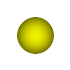
|
Notice that instead of getting unchanged image as we did with a black circle,
we instead produces a horrible looking yellow circle with black creeping in
around the edges. Yuck!
This problem is caused by a fact that few new IM users realise.
Transparent pixels has Color, even if you can't see it.
In the above case that transparent color was black, which leaked into the
yellow circle.
Of course we can fix this by setting the "
-channel" setting correctly for
a transparent image, things do work as expected.
convert yellow_circle.png -channel RGBA -blur 0x8 yellow_blurred_RGBA.png
| |
![[IM Output]](../images/blur/yellow_blurred_RGBA.png)
|
Blur Internals
Lets take this step further with a more complicated example, which will let
use explore exactly what "
-blur" is doing internally.
Here we create a very special image of a yellow circle, which has been drawn
on a fully-transparent red background. This will let us see the effect of a
transparent color has when blurring images.
convert -size 70x70 xc:'#F000' \
-fill yellow -draw 'circle 35,35 20,25' yellow_on_red.png
| |
|
Note the color "#F000" is a fully-transparent red. It that is the background
areas of the image is actually an invisible red in color, instead of the more
typical fully-transpaent black. This is important for later tests.
We can see the color of the transparent parts of the image by effectively
deleting the alpha or matte channel of the image using the "
+matte" operator.
convert yellow_on_red.png +matte yellow_on_red_matte.png
| |
|
Now lets try blurring just the colors of the image again, using the default
'
RGB', "
-channel" setting.
convert yellow_on_red.png -blur 0x8 yellow_on_red_RGB.png
| |
|
As you can see the fully-transparent red background of the image has now crept
into the visible yellow circle, giving it an interesting orange edge, as as it
did previously. You may like this effect, but their are better ways of
generating it, than to rely on invisible fully-transparent colors.
Just prove you can blur this image correctly, lets do it properly...
convert yellow_on_red.png -channel RGBA -blur 0x8 yellow_on_red_RGBA.png
| |
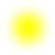
|
The reason that blurring with the alpha channel produces no orange colors as
it did previously, is that when the "
-blur" operator sees that the alpha channel is involved (according
to the current "
-channel" setting), it will only blur using the pixels which are
visible according to that alpha channel. If the alpha channel is not
involved, it will completely ignore it, and the fully-transparent red will
blur with the yellow to produce various shades of orange.
Basically the blur algorithm has been modified to ignore all the
fully-transparent pixels in the image, no matter what color they may have.
Any semi-transparent pixels are still involved, but their effect on the result
is also moderated by just how visible they are. The result is that the circle
has become a fuzzy semi-transparent yellow spot. Just what the user probably
was trying to achieve.
If you really like you can blur both the colors and the alpha channel
separately, thus effectually disconnecting the algorithms 'visibility
adjustment' on the color channels. The result is more like a sun
shining through a dirty brown haze.
convert yellow_on_red.png -channel A -blur 0x8 \
-channel RGB -blur 0x8 yellow_on_red_GS.png
| |
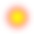
|
This last example produced what a pure grey-scale operator would have produced
if there was absolutely no interaction between the alpha channel and the
colors within the image (transparent or otherwise). That is each of the red,
green, blue, and alpha channels are blurred completely separately to each
other as if they were each a separate grey-scale image.
Just remember, as the default "
-channel" setting is '
RGB', the default action is not
to blur the alpha channel,
and to blur invisible colors with the
visible color within the image.
Aren't you glad that "
-blur" is no longer always a pure grey-scale operator. Though you
can use it in that way if you really want. You didn't always have this choice
however...
|
Before IM version 6.2.4-4, the "-blur", and "-gaussian-blur" operators were applied as pure grey-scale
operation, and as such did not adjust color weighting according to their
alpha channel 'visibility'. The result was that any form of blurring with
transparency, almost always produced horrible 'black halo' effects, such as
purposefully generated in the previous example.
This was classed as a major long term bug within the IM distribution, and
one that was very hard to workaround. For more details of this problem,
see the Blur with Transparency Bug page.
|
FUTURE: Blur and Trimming Images.
Blur vs Gaussian Blur Operators
There has been some confusion as to which operator, "
-blur" or the "
-gaussian-blur" is better
for blurring images. First of all "
-blur" is faster, but it does this using two stage technique.
First in one axis, then in the other. The "
-gaussian-blur" operator
on the other hand is more mathematically correct as it blurs in all directions
simultaneously. The speed cost between the two can be enormous, by a factor of
10 or more, depending on the amount of bluring involved.
In a more technical context, "
-blur" is a 2 pass, 1 dimensional orthogonal convolution filter,
while "
-gaussian-blur" is a 2 dimensional cylindrical convolution filter.
See
Convolution for more details.
The results of the two method should be the same, unlike the use of other
'filtered' convolution operations. However the two pass system means that
there is an intermediate stage in which rounding, or quantum effects, can
occur.
Cristy also bears this out when he reported... You should always use "
-blur" instead of "
-gaussian-blur" because
its faster. Some pixels will be different on the interior due to rounding,
and the edge pixels may be different because of loss of
Virtual Pixel edge effects, again in the
intermediate stage.
In summary, the two operators are slightly different, but only minimally. As
"
-blur" is much faster,
use it. I do in just about all the examples involving blurring.
Large Blur using Resize
Using large sigma values for image bluring is very slow. But onw technique
can be used to speed up this process. This however is only a rough method
and could use some mathematicaly rigor to improve results.
Essentually the reason large blurs are slow is because you need a large
window or 'kernel' to merge lots of pixels together, for each and every pixel
in the image. However resize (making image smaller) does the same thing but
generates fewer pixels in the process.
The technique is basically shrink the image, then enlarge it again to generate
the heavilly blured result. The
Gaussian
Filter is especially useful for this as you can directly specify a
Gaussian Sigma define.
For example here I blue the small rose image by a sigma value of 5 using the
two methods.
convert rose: -blur 0x5 rose_blur_5.png
convert rose: -filter Gaussian -resize 50% \
-define filter:sigma=2.5 -resize 200% rose_resize_5.png
|
![[IM Output]](../images/blur/rose.png) 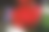
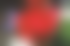
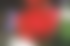
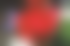
Note the sigma setting (used only on the enlargement step) is only half that
actually desired as you are also doubling the image size. You can make
overall resulting blur larger by adjusting both the downsize ratio and the
given sigma value. The downsizing step is the one that produces the speedup
but you should have at least soem bluring in upsize step as a quality control.
This is just an example of the technique. It is really meant to be used for
very very large sigma values on very very large images. For example in blurs
using a sigma of 10 or more on modern digital photos.
This technique is also used to generate multi-level blur of a single image in
a
Sparse Color Shepards, Alternative.
Sharpening Images
Under Construction
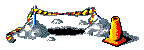
Sharpening is a the computer graphics algorithm that is most often see on TV
shows and movies. Picture the police force 'cleaning up' a 'zoomed in' photo
of a licence plate of a bank robbers car, or the face of a man on a fuzzy shop
camera video, and you see what I mean.
Basically what they are doing is attempting to recover the fine detail of an
image which was lost due to an image natural blurring from camera lens or low
scale resolution images.
Sharpen Arguments? (expand)
The most important factor is the sigma. As it is the real control of the
sharpening operation. It is only due to historical accident it is the second
term in the above.
It can be any floating point value from .1 for practically no sharpening to
3 or more for sever sharpening. 0.5 to 1.0 is rather good.
Radius is just a limit of the effect as is the threshold.
Radius is only in integer units as that is the way the algorithm works, the
larger it is the slower it is. But it should be at a minimum 1 or better
still 2 times the sigma.
First forget the first number, just use 0 which will then use the best number
for the 'sigma' factor you give. The larger the sigma the more it sharpens.
| -sharpen 0x.4 | very small
|
| -sharpen 0x1.0 | about one pixel size sharpen
|
| -sharpen 0x3.0 | probably getting too large
|
The "
-sharpen" operator
is sort of an inverted blur. In fact it works in just about the same way. For
examples which show how this is related to blur see,
Image
Processing By Interpolation and Extrapolation.
For example lets blur a simple image then attempt to sharpen it again
to remove the blur.
convert -font Gecko -pointsize 72 label:A A_original.jpg
convert A_original.jpg -blur 0x3 A_blur.jpg
convert A_blur.jpg -sharpen 0x3 A_blur_sharp.jpg
convert A_blur_sharp.jpg -sharpen 0x3 A_blur_sharp_x2.jpg
|
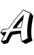
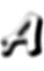
As you can see the result is not perfect, as spreading the pixels out will
make the sharp corners of the image less distinct. Particularly notice the
extra thickening that resulted at the corner of the two lines at the very top
of the image, as well and the near disappearance of the thin lines.
Even repeating the operation or increasing the size of the area of the sharpen
will not help return the image back to the exact original as you have
basically lost the finer detail from the image blurring. However the macro
detail can be recovered quite well.
It is sharpening algorithms which can recover of finer detail in a blurred, or
heavily zoomed image, that makes big money in software packages used by
police forces, astronomers, and government spy agencies.
Unsharp Images
Under Construction
Both the "
-sharpen",
and "
-unsharp"
operators, work using the exact same technique of subtracting a blur from
the original image.
For the internal details of how both "
-sharpen", and "
-unsharp" actually work see
Unsharpen Convolution.
convert A_blur.jpg -unsharp 0x5 A_blur_unsharp.jpg
|
From comments on Sharpening with ImageMagick from Alex Beels
Matching GIMP unsharp
Take gimp radius and add 1 => IM sigma
Threshold divide by 255 => IM Threshold
So GIMP radius=2 amount=1.5 threshold=5 results in
-unsharp 0×3+1.5+0.0196
Another suggested that im_sigma = sqrt(gimp_radius)
Raw notes from Fred Weinhaus
Blur Image for test.
A_original.jpg
convert A_original.jpg -blur 0x3 A_original_blur3.jpg
sharpen is just a gaussian type blurred image subtracted from the image to
make an edge image (high pass filter), then equally blends that back with the
original, so one has a high pass enhanced image.
convert A_original_blur3.jpg -sharpen 0x3 A_original_blur3_sharp3.jpg
unsharp is more complex. It is similar. It takes the difference (edge result)
as above, i.e. like sharpen BUT only blends some fraction or multiple of that
with the original image, AND only if the difference is above a threshold. Thus
unsharp 0x3+1+0 is basically the same as sharpen 0x3
convert A_original_blur3.jpg -unsharp 0x3+1+0
A_original_blur3_unsharp3_1_0.jpg
compare -metric rmse A_original_blur3_sharp3.jpg
A_original_blur3_unsharp3_1_0.jpg null:
164.661 (0.00251256)
The difference may be due to whether one uses a separable (gaussian) blur
filter or not in one or the other but not both. Or it could be just some
slight differences elsewhere in the IM implementation.
If one blends less with the original, one gets less sharpening.
convert A_original_blur3.jpg -unsharp 0x3+0.5+0
A_original_blur3_unsharp3_0p5_0.jpg
If one blends more with the original, one gets more sharpening.
convert A_original_blur3.jpg -unsharp 0x3+2+0
A_original_blur3_unsharp3_2_0.jpg
If one increases the threshold, then one gets less sharpening again.
convert A_original_blur3.jpg -unsharp 0x3+2+0.2
A_original_blur3_unsharp3_2_0p2.jpg
Several of my (Fred's) scripts, binomialedge, gaussianedge, sharpedge use this
blending concept (between the high pass filtered result and the original
image) and a description is there with the scripts. The thresholding in my
scripts is done differently and for a different purpose.
Sharpen using de-convolution
There is a technique of using de-convolution (division in a Fast-Fourier
generated frequency form of images), This works best when the exact 'blur'
that was applied to the original image is known, or calculated in some way.
At the moment only raw 'DIY' methods are as yet available in IM
and a number of such methods are demonstrated (trialed) in the sub-section
Fourier Multiply/Divide.
Generating Shadows
The "
-shadow" operator
is an advanced operator that was developed with the IM example pages.
Basically it represents a very complex blur and re-coloring of transparency
shape of the given image. This is an operation that IM users performed all
the time, but required a good deal of knowledge to figure how to achieve
correctly.
The operator will take an image (usually a clone, and may already have some
transparency) and convert it into a shadow image that can then be positioned
under the original image at given offset, (generally by using the special
Layer Merge operator.
Here for example is a standard method of shadowing an existing image, using a
navy shadow color to match this web page.
convert rose: \( +clone -background navy -shadow 80x3+5+5 \) +swap \
-background none -layers merge +repage shadow.png
| |
|
Note how the shadow image is correctly offset from the image.
You can even zero the blur '
sigma' value and create a hard shadow, but
semi-transparent shadow.
convert rose: \( +clone -background navy -shadow 60x0+4+4 \) +swap \
-background none -layers merge +repage shadow_hard.png
| |
|
The use of "
-layers
merge" to layer shadow images with the original image makes it easy to
generate shadows from a light source from any direction, not just the upper
left side.
convert rose: \( +clone -background navy -shadow 80x3-5+5 \) +swap \
-background none -layers merge +repage shadow_other.png
| |
|
While it is easiest to just use a
Layers
Merge, it will tend to shift the overall offset of the resulting image.
The shift however is not caused by the layering method, but due to "
+repage" removing any negative or
positive offset that may be present in the resulting 'layer' image. See
Shadows and the Offset Problem for alternative
techniques.
|
The Layers Merge method was added to IM
v6.3.6-2. Before this you would need to use the similar layer flattening
operator "-mosaic"
instead. However this operator has problems (see next).
|
Shaped Shadows
Now "
-shadow" was designed
with shaped images in mind, (and this is the reason for its complexity).
For example here is a typical shadowed font.
convert -background none -stroke black -fill white \
-font Candice -pointsize 48 label:A -trim \
\( +clone -background navy -shadow 80x3+3+3 \) +swap \
-background none -layers merge +repage shadow_a.png
| |
|
If there is enough space for the shadow to be included without clipping, in
the original image, you can use this command. It uses a special '
DstOver' composition method so as to
avoid the need to swap the order of the two images.
convert -background none -stroke black -fill white \
-font Candice -pointsize 48 label:'A ' \
\( +clone -background navy -shadow 80x3+3+3 \) \
-background none -compose DstOver -flatten shadow_a_size.png
| |
|
You can probably see a small amount of clipping in this as the original image
did not have quite enough extra space for the requested shadow.
Shadows and the Offset Problem
The problem with shadow is that a blurry shadow extends in all directions. To
compensate the "
-shadow"
operator enlarges the actual original image by adding a border 2 times the
size of the blur '
sigma' value given. That is if you blur a shadow
using '
x3', it will enlarge the image by 12 pixels (2 times 3
pixels on every side).
To compensate for this enlargement, a shadow image is also given an
appropriate negative
Virtual Canvas Offset so
that it will be positioned correctly relative to the image being shadowed. For
a normal image that means the shadow image generated will have a negative
offset.
This however generates a problem when your IM does not have a the "
-layers" method
'
merge' available. For example here we try to add a shadow on
the left side, of the image as if a light shone from the upper right.
convert rose: \( +clone -background navy -shadow 60x3-5+5 \) +swap \
-background none -mosaic shadow_left_clipped.png
| |
|
As you can see as the shadow, was clipped by the "
-mosaic" operator, because of the
negative offset. Not good!
One solution is to add an initial offset to the original image so the
resulting shadow images offset will not be negative.
convert rose: -repage +11+0\
\( +clone -background navy -shadow 80x3-5+5 \) +swap \
-background none -mosaic shadow_left.png
| |
|
Another method is offset both images by an appropriate amount after the shadow
has been generated. This removes any negative offsets before you "
-mosaic" them together. Note the
use of a '
!' flag with "
-repage" to add the given offset to both images.
convert rose: \( +clone -background navy -shadow 80x3-5-5 \) +swap \
-repage +11+11\! -background none -mosaic shadow_tl.png
| |
|
The amount of space need should be at least
2×'
sigma'-'
offset', or in this case 2×3--5 ⇒ 11
pixels, or you risk clipping the shadow. However space of about
'
sigma'-'
offset' usually produces an acceptable level of
clipping.
Another alternative is to expand the original image so as to make enough room
for the final shadow. This is the BEST way of handling shadows, while
preserving the images original location on the virtual canvas.
For example here I pad out the original image with some extra space for the
shadow, and then underlay the shadow image directly. I included a border in
the displayed image result so that you can see that the final image remains
centered in the 'padded' image.
convert rose: -bordercolor None -border 11x11 \
\( +clone -background navy -shadow 80x3+5+5 \) \
-background none -compose DstOver -flatten \
-compose Over shadow_space.png
| |
|
The amount of padding needed should be at least
'
sigma'+abs('
offset') or better still
2×'
sigma'+abs('
offset'), to ensure the shadow is not
clipped. Padding can be asymmetrical to reduce space, but typically
a symmetrical padding (like the above) is used for convenience.
|
Note that while the "-compose Over" setting is not actually
needed in the above, it is recommended. Otherwise later operations (even in
other "convert" commands) could be effected, with unexpected
results. That is a non-standard compose setting can effect other
operations, including: image layering, adding borders, or frames, or simply
other compositions.
|
Shadows and Composite
Many people on the forums generate a shadow image and then try to use the
lower-level "
-composite" to merge the images. For example directly overlay the
original image onto a generated (larger) shadow image.
convert rose: \( +clone -background navy -shadow 60x3 \) \
+swap -composite +repage shadow_composite.png
| |
|
The first point to remember is that the
Composition Operators are very low level and do not read any layer or
virtual canvas offset either original image, or the
Shadow
Operator may have. In fact we still need to remove or adjust the possibly
negative (bad) offset shadow added using the
Repage Setting.
This means that the offset you see on the above example is being generated
simply because of the way shadow enlarged the input image to give the shadow
some space. The shadow is where it is solely due to the expansion of the
shadow image by 2 times sigma. Further, if you use a 'hard shadow' (zero
sigma) you would also end up with no offset to the shadow at all, and thus the
shadow will be hidden by the original image, other than a possible dark halo
edge effect.
You have essentially give up the built-in offset calculation that the
Shadow Operator provides.
Of course you can calculate and set the appropriate
Composite Geometry/Gravity settings instead,
and the easiest way is to use a "
-gravity Center" setting, as the enlarged shadow image is expanded
equally on all sides.
convert rose: \( +clone -background navy -shadow 60x3 \) +repage \
+swap -gravity center -geometry -3-5 -composite shadow_geometry.png
| |
|
Note that the centered geometry offset is negative as the image order was
swapped.
Shadow Outlines
You can also use "
-shadow" to generate a fuzzy outlines of shapes, such as text.
By using
Layers Merge IM will automatically
add the extra space needed for the semi-transparent blur.
convert -background none -fill white \
-font Candice -pointsize 48 label:A -trim \
\( +clone -background black -shadow 100x3+0+0 \) +swap \
-background none -layers merge +repage shadow_outline.png
| |
|
Here you can see one problem with using a blurred shape for outlining.
The edge of the shape will always be at least 50% transparent, by the very
nature of how blurring works.
To compensate you can either enlarge the shape of the image that will be
shadowed, (for an example see
Denser
Soft Outline Font).
Better still you can adjust the transparency of the shadow image, using a
Level Adjustment so that a 50% transparency
along the edges of the shape becomes fully opaque.
convert -background none -fill white \
-font Candice -pointsize 48 label:A -trim \
\( +clone -background black -shadow 100x3+0+0 \
-channel A -level 0,50% +channel \) +swap \
+repage -gravity center -composite shadow_outline_darker.png
| |
|
Another method of handling the shadow positioning and offset, is to basically
junk all the "
-shadow"
generated offsets (using "
+repage"), and center overlaid the original image on the larger
shadow image.
By adding a "
-geometry" composition offset you can then offset the shadow as
a separate action.
convert -background none -fill white -stroke black \
-font Candice -pointsize 48 label:A -trim \
\( +clone -background navy -shadow 80x3 \) +swap \
+repage -gravity center -geometry -3-3 -composite \
shadow_geometry_offset.png
| |
|
However notice how the offset is a negative to what you would normally use for
positioning the shadow. This is because you are really offsetting the text
shape and not the shadow, so it is in the opposite direction.
This method will however clip the original source image, rather than the
shadow image if the offset becomes larger that twice the blur 'sigma'. As
such it can not be used for 'hard shadows' (using a '
x0' blur
'sigma'), unless you include some padding space to the shadow image for the
original image to be overlaid. With a soft fuzzy shadow however that is rarely
a problem.
For some practical examples of shadowing see
Thumbnail shadowing and
Better 3-D
Logo Generation.
Shadow in the Montage Command
As of IM v6.3.1 the "
montage" "
-shadow" setting, started to make
use of the soft 'shaped' shadows this operator provides.
montage -label Rose rose: \
-background none -geometry +5+5 -shadow shadow_montage.png
| |
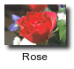
|
However no controls for setting the color, fuzziness and offset of that shadow
is provided, as "
montage" never did provide such controls, beyond
a simple on/off option.
Shadow Internals
Internally "
-shadow" is
extremely complex. Basically not only does it need to enlarge an image to
accommodate a 'soft blurry shadow', but it also needs to blur the existing
shape of the image, set its color appropriately, and finally adjust virtual
page/canvas offsets; all to the users specifications.
For example given the following "
-shadow" command...
convert image_clone.png -shadow 60x4+5+5 image_shadow.png
|
The equivalent IM operation would be...
convert image_clone.png -matte \
-bordercolor none -border 8 -repage -8-8\! \
-channel A -virtual-pixel transparent \
-blur 8x4 -evaluate multiply .60 +channel
-fill {background_color} -colorize 100% \
-repage +5+5\! image_shadow.png
|
Note that the value 8 in the above is two times the blur sigma, so as to
provide enough space for the blurred shadow. However this means the final
image will be 4 times sigma pixels larger. To compensate an equal amount of
negative offset is also added.
Now as a 2 times sigma negative offset will be added to the generated image,
care should be taken to avoid the shadow being clipped, or incorrectly
positioned relative to the original image. That can be done by either giving
the original image an initial positive offset (such as 8-5 or +3+3 pixels),
or using
Layers Merge which understands
negative offsets without clipping the final image.
Basically use the previous techniques to correctly handle posible negative
offsets involved with shadow images.
|
The PNG, and MIFF formats are the only image formats I know that can
handle a negative offset, as well as semi-transparent pixels. I
recommended PNG be used if saving shadow images, for future use.
|
As I said "
-shadow" is a
very complex operation.
Of course while the above example is close to what "
-shadow" does internally, it is
not exactly the same.
The actual "
-shadow"
operator, does not change any of the global settings, such as
border/background/fill colors, or the current virtual-pixel setting. Also it
will short circuit the use of the "
-blur" operator if the blur sigma is set to 0, to prevent
the blur function from giving a warning for a zero sigma or radius.
FUTURE: overlaying multiple shadows
Overlaying two images with shadows, produces an unrealistic darkening of the
shadow where the shadow overlaps. This darkening would be correct if each
object was lit by separate light sources, but more commonly the objects are
lit by the same light source.
The solution is to overlay the one image over the other, applying the shadow
effects to the opaque parts of each layer image in turn. That is the
background shadow should be generated separately into each layer. Remember
the shadow cast by the top most layer should become fuzzier than the shadow
contribution of the bottom most layer.
This complexity gets worse when you have three objects shadowing each other.
Also the offset and blurring from the shadow of each object should technically
be separate. To generate that level of complexity, probably a 3-d ray-tracing
program should be used instead (sigh).
Specialized Blurs
There are a few other sorts of blurs that have been added to IM version 6,
which have very special uses. These operate in specific ways, and not
in all directions as most other 'convolve'-style operations do.
They also may not work as well as other methods of generating specialized
blurs, such as distorting images before and after an more normal blur.
For example see
Polar Cycle Tricks,
and
Elliptical (mapped) Blurring.
WARNING: All these blurs are experimental, and syntax may change!
Radial Blur
You can blur the image around in a circle using a "
-radial-blur", as if it was
spinning around and around. Though technically this is a rotational or
angular blur, rather than a radial blur.
NOTE:You can achieve a much higher quality result (though at a much
slower speed) using a
Depolar-Polar
- Rotational Blur technique.
Note however that like a normal "
-blur" operator, "
-radial-blur" is affected by the "
-channel" setting.
convert -size 70x70 xc:none \
-stroke red -strokewidth 15 -draw 'line 35,5 35,65' \
-stroke yellow -strokewidth 9 -draw 'line 35,5 35,65' \
-channel RGBA -radial-blur 30 radial_blur.png
| |
|
You can place the object off center (by adding some space to an image) for
more interesting "
-radial-blur" effects.
convert -size 70x70 xc:none \
-stroke red -strokewidth 15 -draw 'line 5,50 65,50' \
-stroke yellow -strokewidth 9 -draw 'line 5,50 65,50' \
-channel RGBA -radial-blur 90 radial_blur_90.png
| |
|
The blur argument is the angle the radial-blur covers. That is half that angle
in each direction from the original image. So an angle of 180 is over a half
circle, while 360 degrees will blur the image in a full circle.
convert -size 70x70 xc:none \
-stroke red -strokewidth 15 -draw 'line 5,50 65,50' \
-stroke yellow -strokewidth 9 -draw 'line 5,50 65,50' \
-channel RGBA -radial-blur 180 radial_blur_180.png
| |
|
convert -size 70x70 xc:none \
-stroke red -strokewidth 15 -draw 'line 5,50 65,50' \
-stroke yellow -strokewidth 9 -draw 'line 5,50 65,50' \
-channel RGBA -radial-blur 360 radial_blur_360.png
| |
|
You can even add a little
Image Warping to
make the effect more interesting...
convert -size 70x70 xc:none \
-stroke red -strokewidth 15 -draw 'line 5,50 65,50' \
-stroke yellow -strokewidth 9 -draw 'line 5,50 65,50' \
-channel RGBA -radial-blur 180 -swirl 180 radial_swirl.png
| |
|
The full circle radial blur, can be used to generate a rough circular
gradients. However formulating the correct shape to generate the correct
gradient can be extremely difficult, and probably not worth the effort.
I did try though...
convert -size 80x80 xc:lightblue -fill red \
-draw "path 'M 40,40 C 43,43 47,47 50,40 \
S 52,23 40,20 S 14,22 10,40 S 15,75 40,79 Z'" \
radial_gradient_pre.gif
convert radial_gradient_pre.gif -radial-blur 360 radial_gradient.gif
| |
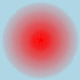
|
Motion Blur
You can add a linearly fading blur in one direction only (giving a radius and
sigma, plus an the angle in which the blur should occur), by using a "
-motion-blur".
This gives your image a look as if it (or the camera) was moving very very
fast.
convert -size 70x70 xc:none -channel RGBA \
-fill yellow -stroke red -strokewidth 3 \
-draw 'circle 45,45 35,35' -motion-blur 0x12+45 motion_blur.png
| |
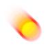
|
Note that not only does the object get a trail, but the edges in the direction
of motion also has the background blurred into it.
This leading edge blurring can be improved by re-drawing or overlaying the
original image and re-applying a smaller "
-motion-blur" multiple times.
convert -size 70x70 xc:none -channel RGBA \
-fill yellow -stroke red -strokewidth 3 \
-draw 'circle 45,45 35,35' -motion-blur 0x8+45 \
-draw 'circle 45,45 35,35' -motion-blur 0x6+45 \
-draw 'circle 45,45 35,35' -motion-blur 0x2+45 \
motion_blur_redraw.png
| |
|
Multiple motion blurs can be made to effect some spread of the trailing
tail of the moving object. Sort of like dissipating smoke or flames.
convert -size 70x70 xc:none -channel RGBA \
-fill yellow -stroke red -strokewidth 3 \
-draw 'circle 45,45 35,35' -motion-blur 0x12+25 \
-draw 'circle 45,45 35,35' -motion-blur 0x12+55 \
-draw 'circle 45,45 35,35' -motion-blur 0x12+40 \
motion_blur_spread.png
| |
|
This technique can be used to generate a spreading shadow on the ground.
Alternatively you could generate a motion blur, then radial blur it a little
though that requires some image shifting to get the center right.
You can also add some extra
Image Warping
to make things even more interesting...
convert -size 70x100 xc:none -channel RGBA \
-fill yellow -stroke red -strokewidth 3 \
-draw 'circle 35,80 45,70' -motion-blur 0x20+90 \
-background none -rotate 50 -wave 5x25 -rotate -50 \
-gravity center -crop 70x100+0+0 +repage \
-draw 'circle 35,80 45,70' -blur 0x2 \
motion_wave.png
| |
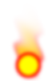
|
Note that while "
-radial-blur" blurs in both directions, "
-motion-blur" only
blurs in one direction.
In both cases I recommend you pad your image with extra space around the edge
(generally using "
-border") as both of these specialized blurs have strong edge
effects that is best to avoid.
If you find a more practical or interesting example or use of the above please
email me a copy (address in footer of page).
Feathering Shapes using Blur
Under Construction
WARNING: This section is now out of date, and users whating to
correctly feather image should look at Feathering Shapes using Distance.
What is shown here is known as 'Blur Feathering' which as is shown in the
later part is a 'False Feathering Technique'. Even so it is still an useful
method but only with 'convex' image shapes.
When you are cutting out a shape from an image, you often want to feather or
blur the edges of the shape a little to give it a smoother look, and to
de-emphasize any parts outside the shape that may have accidentally been
included, or to allow the image to fit into the background without making it
of obvious it is a copy-n-paste.
Basically insteand of having a 'hard' edge to some shape, soften it to 'fake'
anti-aliasing, or lens blurring, so that the paste is more seemless.
For example here I have a GIF image which I overlay a light colored baground
convert shape.gif -background wheat -flatten overlaid.png
| |
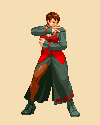
|
However as I am overlaying a GIF image with boolean transparency, and as a
result has highly aliases, or staircase-like edges, the image looks very much
out of place on the background. If you were dealing with real life images,
the above result would look very artifical.
But by bluring the image transparency a little, I can make the overlay
fit onto the background more smoothly.
convert figure.gif -alpha set -virtual-pixel transparent \
-channel A -blur 0x0.7 -level 50,100% +channel \
-background wheat -flatten edge_blured.png
| |
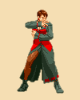
|
This by the way is the exact same technique used from generating
Soft Edges on thumbnails.
For more examples of this look at the results of Fred Weinhaus's "
feather" masking
script.
As you can see this works very well for simple cases, when there is a high
contrast between the overlaid image and the background. However there are
serious problems when you want to use either a much larger feathering blur
factor, or the two images are both very light colors.
Note that as blur extends both into and out of the shaped area, the alpha
channel has to be adjusted so that the edge of the shape is zero
(fully-transparent). but quickly becomes fully-opaque as to get further from
the edge. An example of just such an alpha channel adjustment is provided by
CLUT with Transparency Handling
This adjustment is critical, otherwise instead of de-emphasizing the area
outside the shape, you add a semi-transparent shadow or halo of the area
outside the shape. Basically some semi-tranparent 'undefined color' that was
previously hidden by the image transparency.
However blur has a particularly nasty problem in also smoothing the outline of
the shape. For example...
convert -size 100x60 xc: -draw 'polygon 5,5 50,30 5,55 95,30' \
sharp_angles.gif
| |
|
If you blur this particular shape you get...
convert sharp_angles.gif -blur 0x5 feather_blurred.gif
| |
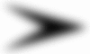
|
Notice how the points of the mask was de-emphesized more than the the edges.
Also how the internal angle seemed to be 'filled in', whic with transparency
can result in full-transparent pixels becomming semi-transparent. That is
pixels with an undefined color may actually become visible!
You can see this more clearly if we threshold the image.
convert feather_blurred.gif -threshold 50% feather_blur_thres.gif
| |
|
This is the problem of using 'blur' as a method of fethering images. And is
especially of concern when dealing with things like fingers, and ears as well
as the areas between the legs. That is the effect on the shape of appendages
themselves and the spaces in between.
If the image has a cartoon like border outline, then this is not as big a
problem for a '1 pixel' feather. But for real life images (with no definitive
borders), it is a real problem.
A proper solution would be to find some sort of measure about how distant
a point if from an edge of the shape, but such that two close edges do not add
there effects together. This distance measuring operation, has now been added
to IM, and is known as
Distance
Morphology. For details of using this for feathering see
Feathering Shapes using Distance.
Related Operators
Basic image modifications
-despeckle -enhance
-noise -spread -displace
-median
Set each channel color of the pixel to the median value of all all pixels
within a given radius. (median = center most value of all values found,
half on one side, half on the other). This is a way of "de-speckling" an
image (such a dust in a scan). But could distort edges, cause some color
channel aburation, and remove thin lines.
This filter is the best technique to use for removing Salt & Pepper
noise, especially on gray scale images.
It is suggested that a trim for a scan use a median filtered image for
attempting to find the appropriate bounding box.
-adaptive-sharpen radius x sigma
Adjust sharpening so that it is restricted to close to image edges
as defined by edge detection.
See forum discussion
https://legacy.imagemagick.org/discourse-server/viewtopic.php?f=1&t=10266
-adaptive-blur radius x sigma
Blur images, except close to the edges as defined by an edge detection
on the image. Eg make the colors smoother, but don't destroy any
sharp edges the image may have.
-adaptive-resize
Resize but attempt not to blur across sharp color changes
Created: 19 April 2004
Updated: 6 October 2007
Author: Anthony Thyssen, <Anthony.Thyssen@gmail.com>
Examples Generated with:
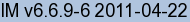
URL: https://legacy.imagemagick.org/Usage/blur/
{kind=link}
{kind=link}
{kind=link}
{kind=link}
![[IM Output]](https://legacy.imagemagick.org/Usage/blur/black_blurred.png)
{kind=link}
{kind=link}
{kind=link}
{kind=link}
![[IM Output]](https://legacy.imagemagick.org/Usage/blur/yellow_blurred_RGBA.png)
{kind=link}
{kind=link}
{kind=link}
{kind=link}
{kind=link}
{kind=link}
{kind=link}
{kind=link}
{kind=link}
{kind=link}
{kind=link}
{kind=link}
{kind=link}
{kind=link}
{kind=link}
{kind=link}
{kind=link}
{kind=link}
{kind=link}
{kind=link}
{kind=link}
{kind=link}
{kind=link}
{kind=link}
{kind=link}
{kind=link}
{kind=link}
{kind=link}
{kind=link}
{kind=link}
{kind=link}
{kind=link}
{kind=link}
{kind=link}
{kind=link}
{kind=link}
{kind=link}
{kind=link}
{kind=link}
{kind=link}
{kind=link}
{kind=link}
{kind=link}